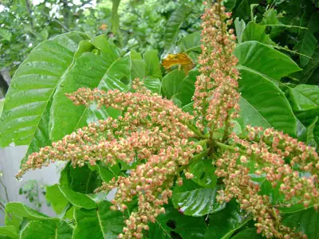

pranet · 出典付きの植物図鑑
マトア ☠
Pometia pinnata J.R.Forst. & G.Forst. · Sapindaceae

マトア (Matoa) またはタウン (Taun) は、ムクロジ科の常緑高木。和名はバンリュウガン（蕃竜眼）。高さは高いもので15mを超える。葉は偶数羽状複葉で小葉は4～9対の披針形鋭尖頭。白色の小さな花をつけ、2-5cmの果実には半透明の白い果肉が入り甘味が強く多汁で生食用。種子は焼食用。樹皮は薬用。
出典: Wikipedia 日本語版「マトア」 · CC BY-SA 4.0
異名: Aphania neoebudica Guillaumin, Aporetica pinnata (J.R.Forst. & G.Forst.) DC., Cnesmocarpus excelsus Zipp. ex Blume, Diplocardia excelsa Zipp. ex Blume, Dubanus acuminatus Kuntze, Eccremanthus eximius Thwaites, Euphoria pometia Poir., Irina alnifolia Blume, Irina diplocardia Blume, Irina glabra Blume, Irina tomentosa Blume, Nephelium acuminatum Hook.f., Nephelium diplocardia (Blume) F.Muell., Nephelium eximium Thwaites, Nephelium pinnatum (J.R.Forst. & G.Forst.) Cambess., Pometia acuminata (Hook.f.) Radlk., Pometia alnifolia (Blume) King, Pometia annamica Gagnep., Pometia coriacea Radlk., Pometia eximia Bedd.
同定や利用は自己責任でお願いします。この図鑑だけを根拠に野生の植物を食べないでください。
出典
- 学名: World Flora Online Plant List 2026-06 · CC0 1.0
- 名前: Wikipedia の記事名と Wikidata · CC0 1.0（Wikidata）。記事名は事実
- 説明: Wikipedia 日本語版「マトア」 · CC BY-SA 4.0
- 食用・毒性: World Checklist of Useful Plant Species (Diazgranados et al. 2020, RBG Kew) · CC BY 4.0
- 分布: World Checklist of Vascular Plants (WCVP), RBG Kew, version 2026-06-04 · CC BY 3.0
このページは pranet のデータから自動生成しています。コードは MIT、データは項目ごとのライセンス（説明）。